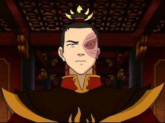

About Zuko
Zuko is the son of Firelord Ozai and therefore prince of the Fire Nation
Zuko as firelord
Zuko's characteristics
- He is a skilled firebender.
- He has a scar on his left eye.
- He is determined and resilient.
- He has a strong sense of honor.